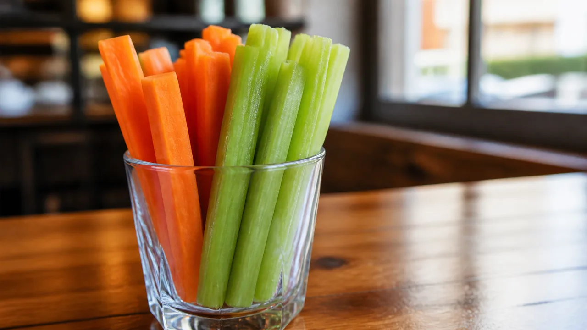

ORDERING GUIDE
Wingstop Vegetarian and Vegan Options: Honest Guide

Wingstop is a chicken restaurant, so vegetarian and vegan choices are limited and mostly live among sides and drinks. Veggie sticks are the clearest starting item. Fries, loaded sides and dips need ingredient and shared-fryer checks.
What to Expect
- No standard vegan wing entrée.
- Carrot and celery sticks are the clearest plant-based side.
- Ranch and bleu cheese contain dairy-based ingredients.
- Shared fryers may matter to strict vegans.
Vegetarian and Vegan Are Different Standards
A vegetarian may eat dairy, eggs or honey while avoiding meat. A vegan generally avoids animal-derived ingredients entirely. Individual practices also differ on shared fryers and cross-contact. A useful Wingstop guide must state the ingredient and preparation facts instead of deciding what every reader should accept.
Wingstop's standard U.S. menu is built around chicken. The sides section can provide individual plant-based components, but it does not automatically produce a balanced entrée. Customers seeking a full vegan meal should be prepared for the honest conclusion that another restaurant may serve the intent better.
Availability and ingredients can change by location or promotion. Verify the current menu and allergen information before ordering. A blog post cannot certify a supplier formulation or inspect the fryer at the selected restaurant.
Veggie Sticks Are the Clearest Starting Item
Carrot and celery sticks avoid breading and the deep fryer. Ordering them without ranch or bleu cheese removes the most obvious dairy accompaniment. They provide cold crunch and can work as a snack or side, but they are not a substantial replacement for a chicken entrée.
Ask whether the sticks are packaged separately and whether any dip is automatically included. Cross-contact during general kitchen handling may still matter to a strict vegan. Read the dedicated Wingstop veggie sticks guide for serving context.
Carrots and celery are also useful in a mixed group order because they can be placed away from hot food. Use clean serving utensils at the table so ranch, cheese sauce or chicken residue is not transferred after pickup.
Seasoned Fries Require Two Separate Checks
The first check is the ingredient list for fries and seasoning. The second is fryer use. A product can appear plant-based by recipe while sharing oil with chicken. Some vegetarians accept shared frying, while many strict vegans do not. Ask the selected restaurant and make the decision according to the reader's stated standard.
Seasoning requests can change the answer. Extra Fry Seasoning, Cajun seasoning or another flavor must be verified separately. “No seasoning” may simplify ingredients but does not change shared oil. Do not describe fries as vegan without both pieces of information.
The Wingstop fries and sides guide compares regular and loaded sides. It does not override current ingredient or preparation information.
Loaded Fries Are Not Vegan as Normally Prepared
Louisiana Voodoo Fries are topped with cheese sauce and ranch. Buffalo Ranch Fries also use dairy-based or creamy toppings. Removing toppings may leave seasoned fries, but the remaining product still requires a shared-fryer decision. A customization should be described as a modified order, not as a standard vegan menu item.
Cheese Fries are vegetarian for some diners who consume dairy, subject to ingredient and fryer checks. They are not vegan. Cheese sauce ordered on the side does not change its ingredients. Be specific about which standard is being applied.
Loaded fries also involve more utensils and preparation surfaces. For a strict avoidance standard, every extra assembly step creates another question. Simple orders are easier to explain and verify.

What About Cajun Fried Corn?
Cajun Fried Corn is a non-potato side with a seasoned exterior. Its name does not answer whether the seasoning contains animal-derived ingredients or whether the corn shares cooking equipment with chicken. Verify the current official information and local preparation.
For vegetarians who accept shared equipment, corn may provide a more substantial side than veggie sticks. For strict vegans, shared oil can be disqualifying. Do not transfer an answer from fries to corn without asking, because preparation may differ.
Plain corn is not necessarily available as a customization. Ask what the ordering system permits instead of relying on a secret-menu request the kitchen may not support.
Dips and Sauces Need Careful Language
Ranch and bleu cheese contain dairy-based ingredients and are not vegan. Honey mustard does not suit vegans who avoid honey and may include other allergens. Cheese sauce is dairy-based. These products may fit some vegetarian diets, but their current ingredients should still be checked.
Wing sauces are designed for chicken and are not automatically offered as vegetable dips. Even when a sauce appears plant-based, shared toss bowls and utensils may matter. Ordering sauce on the side creates a separate product to verify; it does not create a vegan entrée.
The ranch and dips guide explains flavor pairing. For vegetarian and vegan decisions, the current allergen and ingredient information takes priority over taste.
Drinks and Desserts
Bottled water is the simplest drink. Fountain sodas and branded lemonades may fit many vegetarian or vegan preferences, but formulas can change and availability varies. Check the beverage manufacturer or current product information when strict ingredient avoidance matters.
The Triple Chocolate Chunk Brownie contains ingredients that make it unsuitable for vegans and requires a current allergen check for vegetarians. A dessert brand or familiar product name should not substitute for the actual label.
Choosing a drink and veggie sticks can provide something to consume with a group, but it should not be represented as a complete meal. Nutrition, hunger and value matter alongside ingredient compliance.
Shared Fryers and Kitchen Cross-Contact
Wingstop cooks chicken throughout the kitchen. Shared fryers, baskets, tongs, counters and gloves may matter to someone avoiding animal contact. Company allergen language warns that cross-contamination can occur. A plant-based ingredient list cannot remove that operational fact.
Ask the restaurant which products share oil and whether any item avoids the fryer. Do not ask an employee to label the whole order vegan when the kitchen cannot guarantee separation. A factual answer about equipment is more useful than a broad dietary promise.
Vegetarianism and veganism are ethical or dietary frameworks, not allergies, but some customers also have allergies. When dairy, egg or another allergen creates medical risk, use the Wingstop allergen guide and professional advice.
Ready-Made Orders for Different Standards
Strict vegan snack
Veggie sticks without dip and bottled water are the clearest minimal order. Confirm handling if cross-contact matters. This is a snack, not a substantial meal.
Vegetarian who accepts dairy
Veggie sticks with ranch plus a drink may fit, after ingredient verification. Fries or corn require a separate shared-fryer decision.
Vegan who accepts shared equipment
Veggie sticks, a verified drink and fries or corn only after checking current ingredients. State clearly that accepting shared equipment is a personal choice, not proof the kitchen is vegan.
Mixed group order
Package plant-based components separately, omit dairy dips from that area and use clean serving utensils. This limits additional table cross-contact but does not change restaurant preparation.
What I Would Not Recommend
I would not call seasoned fries universally vegan without confirming seasoning and shared oil. I would not recommend removing cheese and ranch from loaded fries and presenting the result as a verified vegan menu hack. I would not treat a fountain drink and celery as a satisfying dinner.
I would also avoid publishing a long list of sauces based on crowd-sourced ingredient guesses. If Wingstop does not provide enough current information to verify a product, the honest answer is to omit it or contact the company.
Customers deserve a clear alternative when the menu cannot meet the task. Choosing another restaurant with a documented plant-based entrée may provide better nutrition, value and confidence than forcing a chicken-focused menu to behave like a vegan restaurant.
Ordering in a Mixed Group
Tell the person building the cart which standard you follow: vegetarian with dairy, vegan by ingredients, or vegan with no shared-fryer acceptance. Without that detail, a well-meaning organizer may order fries or ranch that do not meet your preference.
Request veggie sticks without dip in a separate container. Keep chicken boxes, cheese sauces and dairy dips away from the plant-based area and use dedicated utensils. These steps prevent additional table mixing but do not change restaurant preparation.
Bring a separate entrée when the event requires a full meal. Expecting sides to replace dinner can leave the guest with poor value and insufficient food. A host can source a documented plant-based main elsewhere while still ordering Wingstop for the group.
Questions to Ask
- What are the current ingredients in fries and seasoning?
- Do fries or corn share oil with chicken?
- Can veggie sticks be ordered without dairy dip?
- Has the recipe or supplier changed?
- Can components be packaged separately?
Ask ingredient and equipment questions rather than “Is it vegan?” Staff may use a different definition. Specific answers let customers apply their own standard.
Final Checklist
Define the standard, verify ingredients, ask about shared fryers, remove dairy dips, check the drink, plan a substantial alternative entrée when needed and prevent table cross-contact. When a critical answer is missing, omit the item instead of guessing.
Value and Nutrition Reality
A collection of side dishes can cost as much as a full entrée while providing less protein and staying power. Review the final cart before treating fries, veggie sticks and a drink as a complete meal. When the order does not meet hunger or nutrition needs, a documented plant-based entrée elsewhere is the more honest recommendation.
Vegetarian customers who eat dairy may have more combinations, but loaded fries and dips can make the meal heavy without solving the lack of a main protein. Vegan customers face a narrower menu plus shared-equipment questions. Clear limits are more useful than presenting every possible customization as a satisfying option.
Final Recommendation
Decide before opening the ordering app whether your standard concerns ingredients alone or also shared fryers, utensils and surfaces. That one distinction prevents most confusion at checkout. Confirm the standard again with anyone sharing the order. If the available sides do not make a satisfying meal, choose a restaurant with a true plant-based entrée instead of forcing several uncertain add-ons into one expensive order.
Verify ingredients and shared equipment before ordering, and choose another restaurant when Wingstop cannot provide a substantial option that meets your standard.
FAQ
Does Wingstop have vegan wings?
No standard plant-based wing entrée appears on the current U.S. menu.
Are Wingstop fries vegan?
Do not assume so. Verify the current ingredients, seasoning and shared-fryer practice.
Is Wingstop ranch vegetarian?
It may fit vegetarians who consume dairy, subject to current ingredients. It is not vegan.
What is the simplest vegan option?
Veggie sticks without dairy dip and bottled water are the clearest components, though not a complete meal.